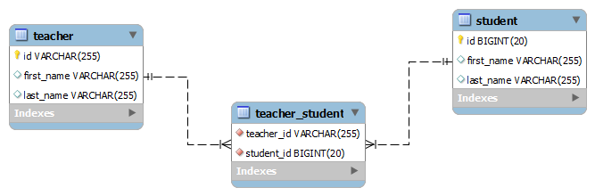

Demo Teacher Application
I am an instructor for a course (comp2613) @ BCIT.
The sample project I have built is a Teacher/Classroom relationship.

Basically, you can add or remove teachers, students and add students to a teacher's class
This application is powered by Swing backed by a H2 DB.
If you wish to see the data persisted to H2, open up the local console:
http://localhost:8082 (H2 will start a server for you)
and login with the following settings:
Generic H2 (Embedded)
org.h2.Driver
jdbc:h2:mem:testdb
blank username and password
Click here to download my application. After you unzip this application into a suitable folder, "cd" into that directory and run:
java -jar comp2613-0.0.1-SNAPSHOT.jar